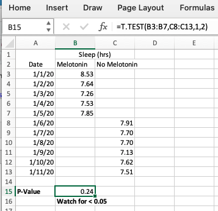

Chapter 4 Methods
4.1 What is a dataframe?
Self-collected data is almost always best represented by a table of the variables you want to study and the values that you collected for each of those variables. The most common type of table is a spreadsheet, a specific form of which in Personal Science we refer to as a data table or a data frame. Abbreviated “dataframe” or often just “df”, it’s a table of values and variables that always has the same form:
- columns are variables: the parameters you want to study
- rows are observations: each incident of data you collected.
It’s important to get in the habit of this row/column approach to data collection because, as you’ll see, all of our tools assume that data will come in a dataframe format.
4.2 Is it chance? T-Test
Problem
You tried an intervention and want to see if it worked. How likely is it that the results were chance?
Solution
One of the simplest tests is a “T-Test”, sometimes called a “Student T Test”.
Statisticians use the concept of P Value to discuss the how often a result might appear to be significant even when it’s not. While this crude measure doesn’t describe all the ways something might happen due to chance, generally the lower the P Value, the better. Professional scientists, especially those who understand statistics, will get touchy if you claim a result based purely on P Values, but for Personal Science purposes, it’s a good start. There is no “correct” cutoff value that can determine the likelihood that something is due to chance alone, but traditionally people assume that anything under 0.05 deserves a closer look.
Here’s an example for how to do this in Excel.
Suppose you’d like to know if taking a melotonin supplement will help you sleep longer. You’ve measured your daily sleep, taking the supplements on some days (the “intervention”) and not on others (“control”).
A simple spreadsheet might look like this:

Track your sleep under two columns: one for nights when you took the supplement, and the other for nights you didn’t.
The built-in Excel statistical function T.TEST will calculate the P-Value when you give it two ranges, the “intervention” (nights we took melotonin) and the “control” (nights without).
See the screenshot for the exact formula in this case:
=T.TEST(array1,array2,tails,type)
Enter a 1 for tails (because we’re only interested in one measurement, sleep) and a 2 for type (because in this case our samples are not of the same length).
The P Value in this example, 0.24, is above 0.05 and therefore we will assume that any difference in sleep between the nights is due to pure chance.
4.3 Rolling average
Problem You want to take the rolling 7-day average of a series of numbers.
headache_df <- read_csv("headache-variables.csv")
headache_df %>% head() %>% knitr::kable()| date | headache | icecream | z | wine |
|---|---|---|---|---|
| 2022-03-08 | FALSE | FALSE | 7.352620 | 0 |
| 2022-03-09 | FALSE | FALSE | 8.330984 | 0 |
| 2022-03-10 | FALSE | FALSE | 7.542562 | 0 |
| 2022-03-11 | FALSE | FALSE | 8.490124 | 0 |
| 2022-03-12 | FALSE | FALSE | 8.133232 | 0 |
| 2022-03-13 | FALSE | FALSE | 7.026528 | 0 |
Solution use the rolling() functions in package zoo:
library(zoo)##
## Attaching package: 'zoo'## The following objects are masked from 'package:base':
##
## as.Date, as.Date.numericheadache_df %>%
mutate(sleep7A = rollapply(z,
7,
function(x) {x = mean(x,na.rm = TRUE)},
align = 'right',
fill = NA)) %>%
tail() %>% knitr::kable()| date | headache | icecream | z | wine | sleep7A |
|---|---|---|---|---|---|
| 2022-06-08 | FALSE | FALSE | 6.727889 | 0 | 7.325807 |
| 2022-06-09 | FALSE | TRUE | 5.706245 | 0 | 7.040659 |
| 2022-06-10 | FALSE | FALSE | 6.269520 | 0 | 6.854206 |
| 2022-06-11 | FALSE | FALSE | 7.015939 | 0 | 6.882075 |
| 2022-06-12 | FALSE | FALSE | 7.982111 | 0 | 7.149014 |
| 2022-06-13 | FALSE | FALSE | 6.803117 | 0 | 6.957848 |